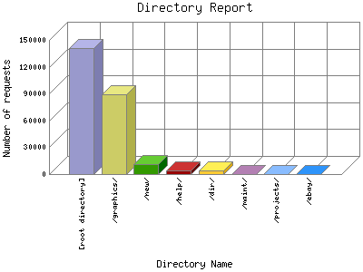

Analog 5.24
Analog 5.24 Report Magic for Analog 2.13
Report Magic for Analog 2.13The Directory Report analyzes accesses to this web site's directories. This information can be useful in determining the most requested areas.
This report shows all results. This report is sorted by number of requests.

| Directory Name | Number of requests | Percentage of bytes transferred in the last 7 days | |
|---|---|---|---|
| 1. | [root directory] | 140,760 | 0% |
| 2. | /graphics/ | 89,633 | 0% |
| /graphics/buttons/ | 2,768 | 0% | |
| 3. | /new/ | 11,651 | 0% |
| 4. | /help/ | 3,687 | 0% |
| 5. | /dir/ | 3,606 | 0% |
| /dir/graphics/ | 382 | 0% | |
| 6. | /maint/ | 94 | 0% |
| /maint/members/ | 12 | 0% | |
| /maint/links/ | 6 | 0% | |
| /maint/photos/ | 12 | 0% | |
| /maint/books/ | 12 | 0% | |
| 7. | /projects/ | 304 | 0% |
| 8. | /ebay/ | 6 | 0% |
This report was generated on November 17, 2025 01:09.
Report time frame April 8, 2024 11:04 to November 16, 2025 02:21.
| Web statistics report produced by: | |
| Analog 5.24 | Report Magic for Analog 2.13 |